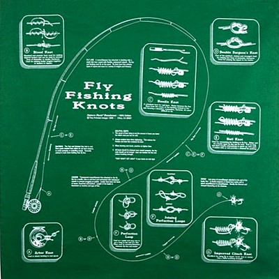

私のお気に入り
釣りの衣類 フライフィッシング ノット（結び方） バンダナ
もう何十年も前に、これと同じバンダナを買った。今ではだいぶ色あせてしまったので、同じ物を売っていないかと、ネットを探したところ、日本のアマゾンに売っていた。初代は青色だったが、二代目は緑色である。

フライフィッシングの基本的ノット（結び方）
がプリントされたバンダナ
画像はメーカーウェブサイトから引用
がプリントされたバンダナ
画像はメーカーウェブサイトから引用
これはアメリカの、プリンテッドイメージ・チコという会社の、Nature Facts Bandanas というシリーズのうちの１つのデザインである。
このアイテムが「私のお気に入り」になっているということが、このサイトの作者の技量を余すところなく伝えているのだが、まぁ事実なので仕方が無い。（笑）
フライフィッシングに必要な、基本的なノットが８種類プリントされており、それぞれ英文の解説が載っている。
- A. Arbor Knot : アーバーノット リールにバッキングラインを結ぶ時に用いる。
- B. Blood Knot : ブラッドノット リーダーとティペットを結ぶ時に用いる。直径の異なるライン同士も結べる。
- C. Needle Knot : ニードルノット 後述のネイルノットの代替として、フライラインとバッキングラインとを接続するのに用いる。
- D. Double Surgeon's Knot : ダブルサージョンズノット 直径の異なるリーダーとティペットを結ぶ時に用いる、早く、簡単で、結節強度の大きな結び方。
- E. Nail Knot : ネイルノット フライラインとバッキングラインとを接続するのに用いる。チューブや釘を用いて結ばれる。
- F. Joining Perfection Loops : パーフェクションループを用いた、ループ・トゥ・ループの接続方。フライライン先端のループと、リーダー先端に作ったループとで双方を接続する方法。
- G. Improved Clinch Knot : インプルーブドクリンチノット ティペットにフライやルアー、スイベルなどを結ぶ時の優れた方法。95%の結節強度が保たれる。
その他、結び方全般についてのコツや、注意事項がプリントされています。最近フライフィッシングを始めた方などには、とても良いプレゼントでしょう。
国内のタックルメーカー各社でも、フライフィッシングの基本的ノット：日本語版とか、ソルトウォーター・フライフィッシング編、ルアー向きノット編、アユ釣り、エサ釣り編などを企画して販売したら、けっこう売れるのでは? と夢想している。
2020/03/01
私のお気に入り 目次へ
サイトマップ
ホームへ
お問い合わせ